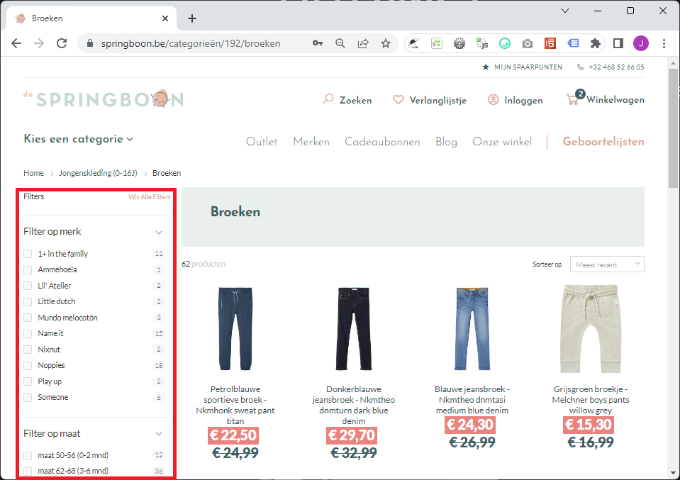
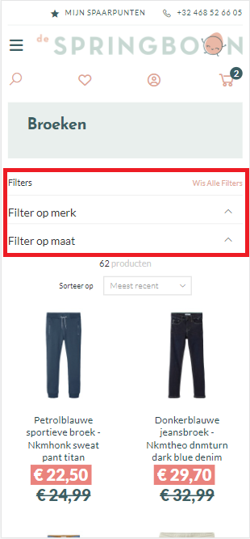
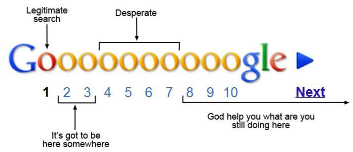
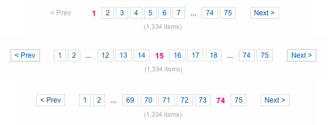

Full-stack Development [OGI03r]
04. Forms
04.1
Named routes
Named routes
-
Specify a route name using the chained method
nameRoute::get('user/profile', function () { // })->name('profile'); -
The same with controller actions
Route::get('user/profile', [UserProfileController::class, 'show'])->name('profile');
Generating URLs To Named Routes
// Generating URLs…
$url = route('profile');
// … for routes with parameters
$url = route('profile', ['id' => 1]);
// Generating Redirects…
return redirect()->route('profile');04.2
Sessions
Sessions
-
By default the middleware
\Illuminate\Session\Middleware\StartSessionbacks a permanent Session, only for the routes inroutes/web.php - Principle: set a cookie (
appname_session) with a unique ID on the client and store data on the server across multiple requests for the user -
Where/how is the session data stored on the server?
- depends on the
driverconfiguration inconfig/session.php - by default it is set to
databasewhich requires asessionstable installable through0001_01_01_000000_create_users_table.php - easy setting:
filewhich means session data is stored as JSON instorage/framework/sessions
- depends on the
-
Store and retrieve session variables with
put, get, has, exists, increment, push, pull, forget, flush… (docs)$value = $request->session()->get('key'); $value = $request->session()->get('key', 'default'); $allData = $request->session()->all(); $request->session()->put('key', 'value');
Flash data in the session & more
- Flash a variable = store variable in the session only for the next HTTP request
$request->session()->flash('status', 'Task was successful!');
$request->session()->reflash(); // flash all data once again!
$request->session()->keep(['username', 'email']); // the same for a selection of vars
$request->session()->now('status', 'Task was successful!'); // store as flashed data but only for the current request
-
Regenerate the session ID by
$request->session()->regenerate();(often done after successful authentication in order to prevent session fixation) regenerate()+flush()by$request->session()->invalidate();
04.3
Handling forms
General approach
-
Blog post routes example
// Display a form to create a blog post... Route::get('blogposts/create', 'PostController@create'); // Store a new blog post... Route::post('blogposts/create', 'PostController@store'); - The first route shows a Blade template containing a form
-
The second route
- validates the HTTP request
- stores the blog post
- always redirects the user
About the other HTTP Verbs
-
Blog post routes example
// Display a form to create a blog post... Route::get('blogposts/create', 'PostController@create'); // Store a new blog post... Route::post('blogposts/create', 'PostController@store'); -
Don't use the other HTTP verbs (delete, put, patch)
- only the verbs GET and POST are allowed (see HTML standard)
- … unless you're faking the verbs with form method spoofing
- … unless you're building a RESTful web API
Cross-Site Request Forgery (CSRF)
- CSRF = A serious type of attack
A CSRF attack forces a logged-on victim’s browser to send a forged HTTP request, including the victim’s session cookie and any other automatically included authentication information, to a vulnerable web application. This allows the attacker to force the victim’s browser to generate requests the vulnerable application thinks are legitimate requests from the victim.
- Example
<form action="https://your-application.com/user/email" method="POST">
<input type="email" value="malicious-email@example.com">
</form>
<script>
document.forms[0].submit();
</script>- SOLUTION: Generate a CSRF token on each form load (and limit that token to that form only) and validate it too.
CSRF Protection
-
Include the automatically generated CSRF field/token in your (POST) form
// Vanilla PHP <?php echo csrf_field(); ?> // Blade Template Syntax … @csrf // … is the equivalent of: <input type="hidden" name="_token" value="{{ csrf_token() }}"> -
The
VerifyCsrfTokenmiddleware (part of thewebgroup) is already activated and does the checking - Read the Laravel docs on CSRF Protection on excluding CSRF protection and CSRF support for JS frameworks
A simple form v1 (1)
-
The Blade template
@include('common.errors') {{-- visualizes the $errors array --}} <form method="POST" action="{{ url('blogposts/create') }}" accept-charset="UTF-8"> @csrf <div class="form-group"> <label for="title">Title:</label> <input class="form-control" name="title" type="text" value="{{ old('title', '') }}" id="title"> </div> <div class="form-group"> <label for="content">Content:</label> <textarea class="form-control" rows="10" name="content" cols="50" id="content"> {{ old('content', '') }} </textarea> </div> <input class="btn btn-primary pull-right" type="submit" value="submit"> </form> - The helper method old retrieves an old input value flashed into the session
A simple form v1 (2)
-
The controller
public function create(): View { return view('blogpost.add'); } public function store(Request $request): RedirectResponse { // building oldskool form errors … $errors = array(); if (!(($request->has('title')) && (strlen($request->title) > 0))) { $errors[] = 'The title field is required.'; } else if (strlen($request->title) > 125) { $errors[] = 'The title may not be greater than 125 characters.'; } else if (Blogpost::where('title', $request->title)->exists()) { $errors[] = 'The title has already been taken.'; } if (!(($request->has('content')) && (strlen($request->content) > 0))) { $errors[] = 'The content field is required.'; } …
A simple form v1 (3)
-
The controller
public function store(Request $request): RedirectResponse { // building oldskool form errors … … if (count($errors) > 0) { // flash the form errors in the session $request->session()->flash('errors', $errors); // flash the request inputs in the session and take previous route $request->flash(); return back(); // NOTE: flashing the request inputs was necessary since the user is REDIRECTED // also possible: return back()->withInput(); } else { Blogpost::create($request->all()); // mass assignment return redirect('blogposts/success'); } }
Validation (1)
-
In our controller, the
validatemethod- takes the HTTP request and desired validation rules
- redirects the user back to his previous location upon failure (+ auto-flash of errors and input values)
public function store(Request $request): RedirectResponse { $request->validate([ 'title' => 'required|unique:blogposts|max:125', 'content' => 'required', ]); // The blog post is valid, store in database... }
Validation (2)
-
Anticipating validation in your Blade templates
-
The
ShareErrorsFromSessionmiddleware (part of thewebgroup) assures an$errorsvariable is available in your views - Enjoy the richness of the rules available
'start_date' => 'required|date|after:tomorrow', 'finish_date' => 'required|date|after:start_date', 'finish_date' => ['required', 'date', 'after:start_date'], // same, alternative notation 'photo' => 'image|mimes:jpeg,png', // is an image of any type and its content is jpeg or png 'avatar' => 'dimensions:min_width=100,min_height=200', // image with specified dimensions 'state' => 'exists:states,abbreviation', // exists in column abbreviation of table states 'email' => 'email:rfc,dns', // has email format and valid domain (requires intl package) 'password' => ['required', 'confirmed', Password::min(8)->letters()->mixedCase()->uncompromised()], // for optional fields !!!!!! // since we have TrimStrings and ConvertEmptyStringsToNull middleware running 'publish_at' => 'nullable|date' -
The
Validation (3)
-
Read the Laravel docs on Validation on
- Stopping On First Validation Failure (bail)
- Validating arrays
- Form Request = classes encapsulating the validation and authorization logic
- Working With (field related) Error Messages
- Customizing Error Messages (in your app's language)
- Available Validation Rules
A simple form v2 (1)
-
The new version of the controller
public function create(): View { return view('blogpost.add'); } public function store(Request $request): RedirectResponse { $request->validate([ 'title' => 'required|unique:blogposts|max:125', 'content' => 'required' ]); Blogpost::create($request->all()); return redirect('blogposts/success'); }
A simple form v2 (2)
-
Change
common/errors.blade.phpsuch that it visualizes an $errors MessageBag@if ($errors->any()) <!-- Form Error List --> <div class="alert alert-danger"> <strong>Whoops! Something went wrong!</strong> <ul> @foreach ($errors->all() as $error) <li>{{ $error }}</li> @endforeach </ul> </div> @endif - This instance of
Illuminate\Support\MessageBagalso supports field-based retrieval, and has a specific Blade directive:<input id="title" type="text" class="@error('title') is-invalid @enderror"> @error('title') <div class="alert alert-danger">{{ $message }}</div> @enderror
04.4
File( upload)s
File Storage ≠ public folder
-
The public folder contains the assets (img, css, js, …)
- Assets directly accessible from the web server (link it with
asset()) - By default, you cannot handle (= store, edit, list, …) files there
- Assets directly accessible from the web server (link it with
-
File Storage is an abstraction layer which allows you to handle files on local and remote (cloud) systems in a uniform way
-
To be configured in
config/filesystems.php -
Organized as disks = configuration combination of a driver and a location.
For example, the
localdriver interacts with the local file system. - Any of the disks can be used from your code, but you need to specify a default disk
-
To be configured in
The disks
-
The
localdisk- Uses the
localdriver and its root isstorage/app/private - Is the default disk in a fresh Laravel project
- Files saved on this disk, cannot be served from the web server later on
- Uses the
-
The
publicdisk- Uses the
localdriver and its root isstorage/app/public storage/app/publicis neither located inside the web server's document root but …-
Luckily, you can create* a symbolic link
public/storagetostorage/app/public☺$ php artisan storage:link The [public/storage] directory has been linked. -
Keep on using the
asset()helper:{{ asset('storage/file.txt') }}
- Uses the
File uploads
-
Checklist
- Set the
publicdisk as the default filesystem disk in.env(and/orconfig/filesystems.php) - Create a symbolic link to
storage/app/public - In your
<form>element (Views): check yourenctypeattribute (see this course) - Validation: check on file (MIME) type and eventually file size, dimension, …
-
Use a
*with multiple file uploads e.g.documents.* -
Check the type. Don't let *.php (and many others) pass!
Hint:
imageis a rule too
-
Use a
- Of course you need to store the file upload
-
store()will assign a unique ID filename. Most of the time, it's a good practice. (think of duplicates) - If the path (relative to Filesystem root) does not exist, the folders are created (think of a clean directory structure)
-
- Set the
04.5
Server-side filtering & pagination
Filtering?
-
Allow a visitor to refine a set of results
- A form with checkboxes, dropdowns, etc. per defining property of the result set
- Typically placed
- on the left hand side, next to the results (desktop)
- above the results, collapsible or linking to menu (mobile)
- SQL example:
WHERE (brand_id = 5 OR brand_id = 6) AND (price BETWEEN 100 AND 200) AND … - It is necessary to persist the form values (!)
-
Typically in combination with
- Pagination
- Sorting on specific properties of the result set (asc/desc)
 
Filtering scenarios
-
Filter via
GETparams- Pro: links can be shared/bookmarked
- Con: links become cluttered
- Con: filter not preserved after having navigated away
-
Filter via
Sessionparams- Pro: links don't become cluttered
- Pro: filter preserved after having navigated away
- Con: links can't be shared/bookmarked
Filtering (GET) in Laravel (1)
-
Routing: just stick to 1 (GET) route
parameter example:Route::get('/products', [ProductController::class, 'filter']);products?brand_id=64&category_id=3&size=L,XL
⟶ no redirect on failing validation and no session flashing (and noold()) -
Blade persistence by
request()(orsession()->get())<select name="brand_id" id="brand_id" class="form-control"> @foreach ($brands as $brand) <option value="{{ $brand->id }}" @if (request('brand_id', '') == $brand->id) selected="selected" @endif>{{ $brand->name }}</option> @endforeach </select>
Filtering (GET) in Laravel (2)
-
Some example controller code
Never do$validator = Validator::make($request->all(), [ // Manually Creating Validators 'brand_id' => 'nullable|exists:brands,id', … ]); if ($validator->passes()) { $products = Product::query(); // returning a neutral Builder object if ($request->filled('brand_id')) { // might be some other condition e.g. has(), == 0 $products->where('brand_id', $request->brand_id); // chaining changes the state of the Builder object anyway ! } $products->when($request->filled('category_id'), function (Builder $query, string $categoryId) { // syntactic sugar using when() return $query->where('category_id', $categoryId); }); // Never do: $products->where('size', 'L')->orWhere('size', 'XL') // use logical grouping in stead $products->where(function (Builder $query) { $query->where('size', 'L') ->orWhere('size', 'XL') }); // or more simple: whereIn $products->whereIn('color', ['red', 'blue']); }$products->where('size', 'L')->orWhere('size', 'XL')
because in SQL AND has precedence over OR. So your SQL-query becomes:
... WHERE ((brand_id = 64) AND (category_id = 3) AND (size = 'L')) OR (size = 'XL')
Pagination?
-
When having too many items to show, split them into several pages
- e.g. search results, filter results
- Paginator typically placed beneath the results

Examples
-
Bad examples:


-
Good example:

- Always indicate how many results there are
- Always indicate how many pages there are
-
Show a reasonable number of pages
- The number row automgically adjusts itself based on the current page
- First two and last two pages always shown
- All, except the current page, clickable
-
Always indicate current active page
- Don't link it though!
-
Always show next/previous buttons
- Only clickable when necessary
- Don't show First/Last links (no direct value)
Pagination internals
- From database: Total number of items
- Number of items to show per page
- Parameter in url: current page (default = 1)
-
To calculate: number of pages
$numPages = ceil($numItems / $numItemsPerPage); - From database: a subset of items (ORDER BY, LIMIT)
- A pagination rendering strategy
Pagination in Laravel (1)
-
Use the
paginatemethod with Query Builder or Eloquent-
detects
?pagequery string argument on the HTTP request - gets the items from the DB through proper limit and offset
- returns a paginator object which is loopable like a result set
public function index(): View // controller method { $users = User::where('votes', '>', 100)->paginate(15); // uncomment next line to change the paginator's target URL // $users->setPath('custom/url'); return view('user.index', ['users' => $users]); } -
detects
- Don't use
simplePaginate: it will only generate prev/next buttons
Pagination in Laravel (2)
-
Simple (Tailwind CSS or bootstrap compatible) display in Blade
<div class="container"> @foreach ($users as $user) {{ $user->name }} @endforeach </div> {{ $users->links() }} - It's up to you to find a better strategy than rendering all the page links
04.6
Concluding demo
Concluding demo
- Let's build an admin panel for last week's webshop
- Let's talk about URL design ⟶
- Let's use Eloquent in the ProductController ⟶
- Let's add the Blade templates ⟶
- Let's realize form validation and form persistence ⟶